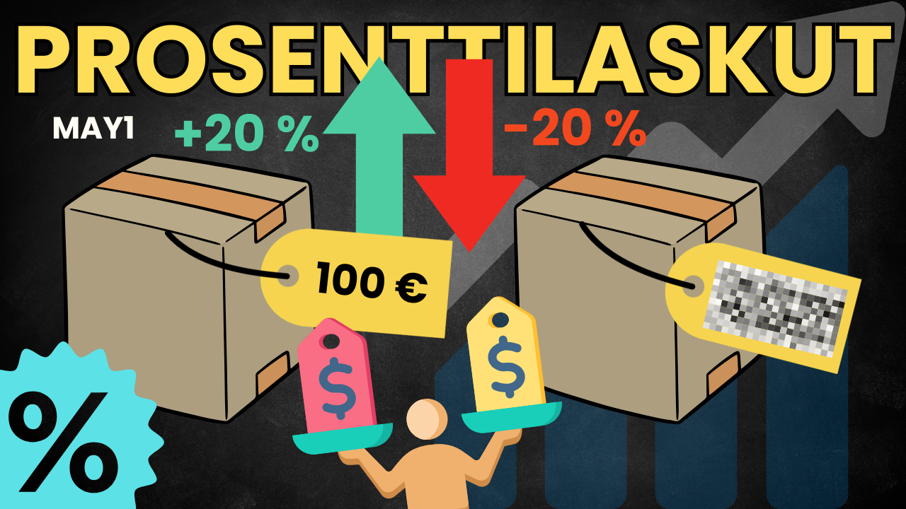
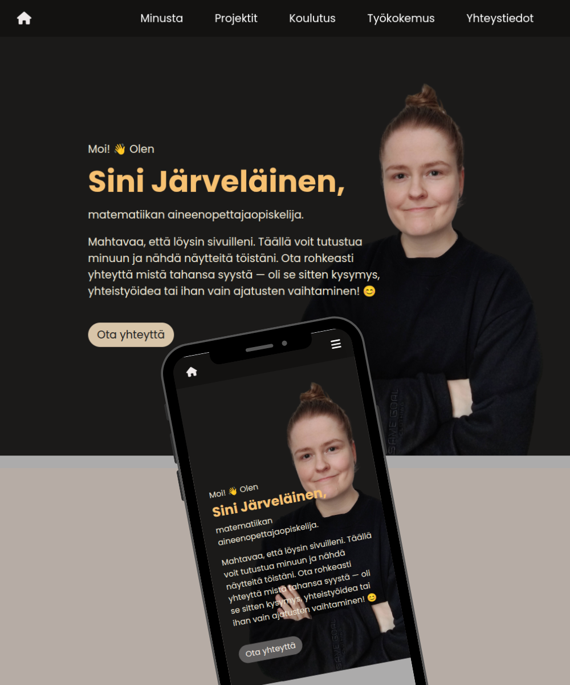

PORTFOLIO

Matematiikan opetusvideot
Selkeitä, visuaalisesti kiinnostavia videoita lukiolaisille.
Katso YouTube-kanava
Matematiikkapeli
Interaktiivinen peli, joka harjoittaa päässälaskutaitoja. Suunnattu alakoululaisille.
Katso GitHubissa

Responsiiviset verkkosivut
HTML- ja CSS-toteutus, joka skaalautuu eri näyttöihin. Tämä portfolio on tämä projekti!

GeoGebra-appletti
Interaktiivinen työkalu kolmion kulmien summan havainnollistamiseen. Käyttäjä voi muokata kolmiota.
Avaa GeoGebrassa
Kirjallisuuskatsaus: Konveksit funktiot
Kandidaatintutkielma konvekseista funktioista. Kirjoitettu selkeästi siten, että voisi toimia oppimateriaalina yliopisto-opiskelijoille.
Avaa PDFYHTEYSTIEDOT
sini.jarvelainen@gmail.comMatikkaTube
ssihni
jarvsini